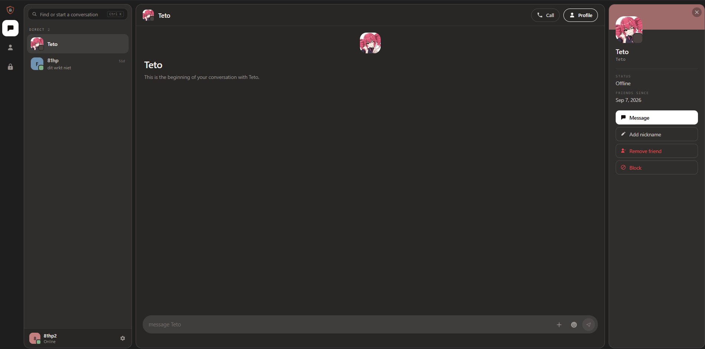
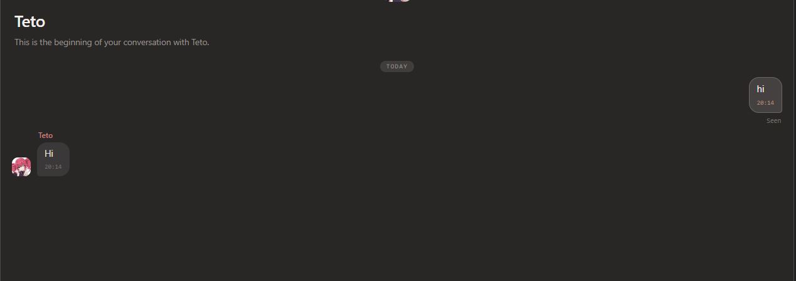
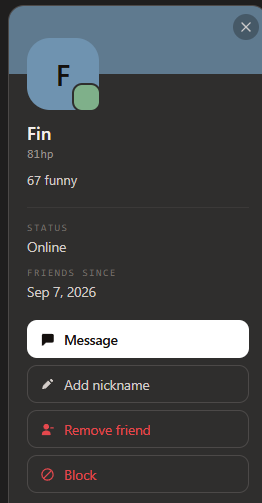
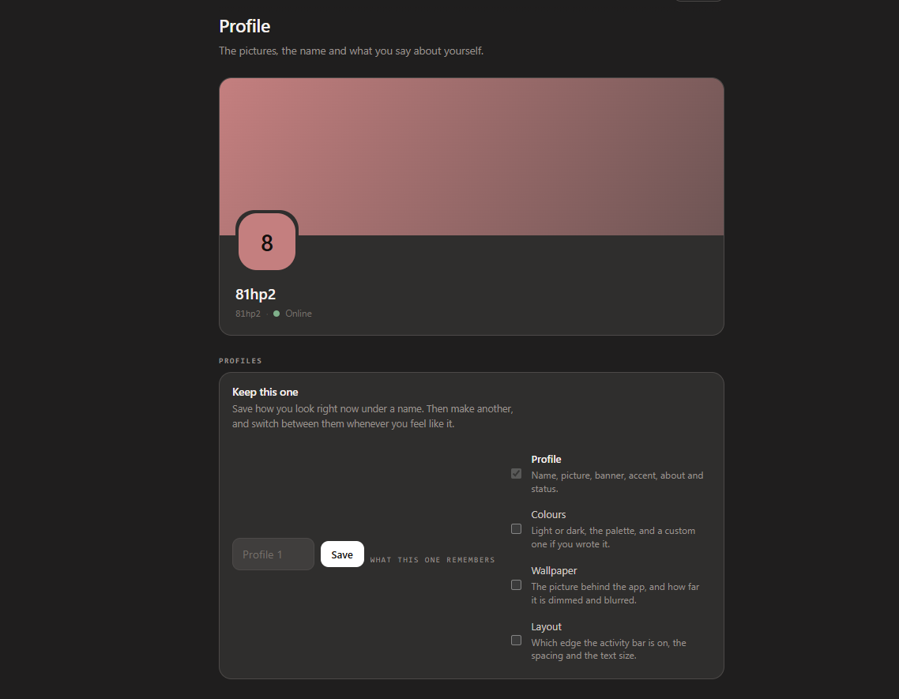
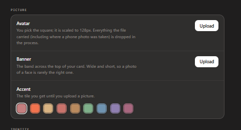
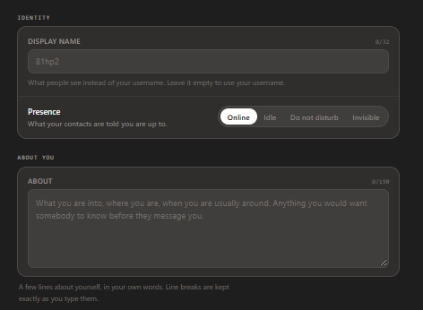
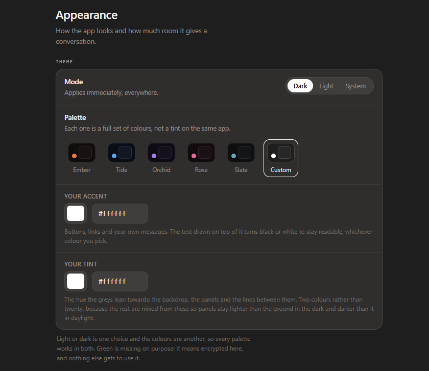
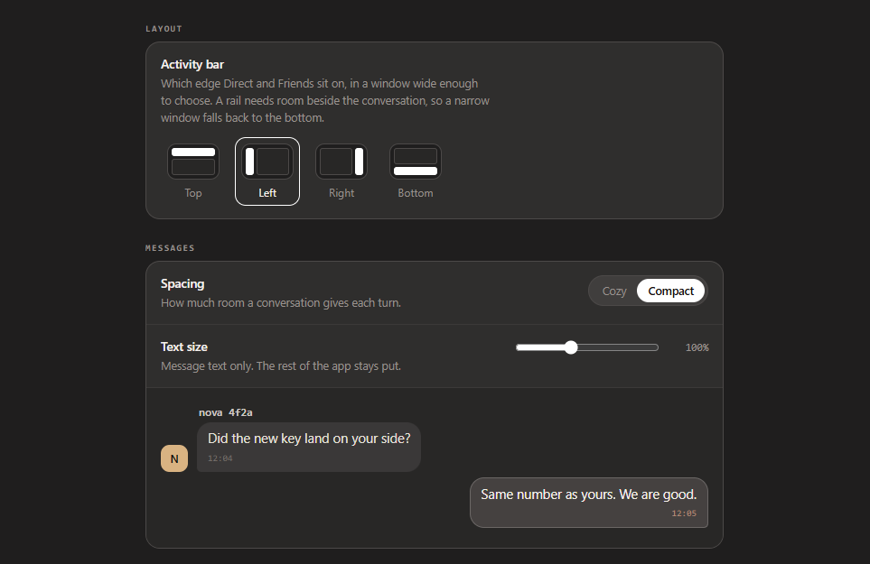

project
Cipher is my own private messenger. Every message gets encrypted on your device so nobody but you and the person you're talking to can read it. Not even my server.

I built Cipher because i wanted a messaging app where i actually know nobody is reading along. Every message is encrypted on the sender's device and only gets decrypted on the receiver's device. The server just passes along something it can't read. It has friends, profiles, voice calls, a passkey locked vault for private notes and a desktop app for Windows, macOS and Linux. It also works on your phone!
I made this with a lot of help from AI. I came up with the idea and what it should do, and kept testing and tweaking it until it worked how i wanted.
It's built with TypeScript and React for the app and Fastify + Socket.io for the backend.
I worked on this with a friend and I learned to use branches and merging and how to use AI on a project this size.
screenshots






